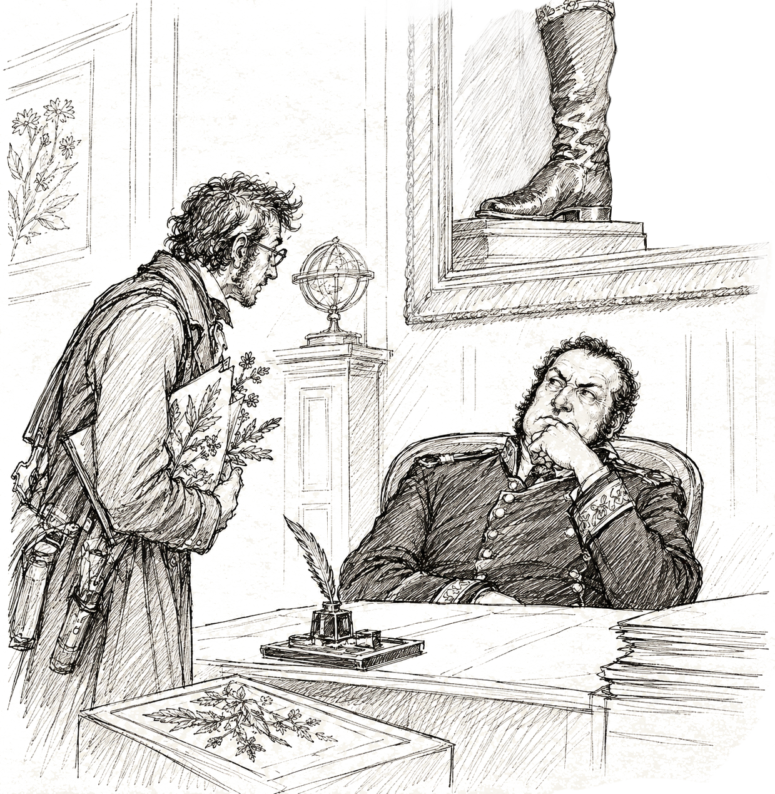
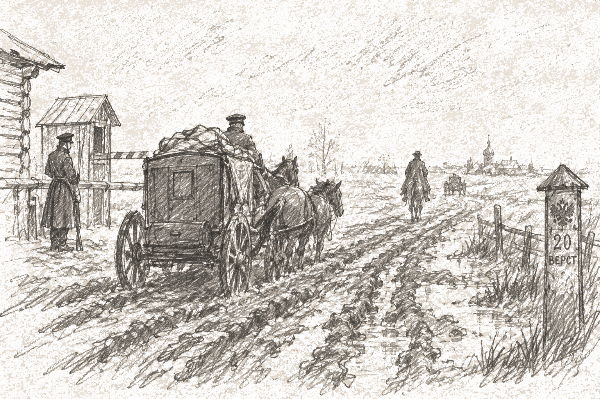

angestellt während einer Reise durch das europäische Russland
❦
Dr. Johann Krause
Doctor der Naturgeschichte
Entsandt von der Freiberger Bergakademie, mit Empfehlungsschreiben der Kaiserlichen Akademie der Wissenschaften zu St. Petersburg.
Anno 1835
Russische Akademie der Wissenschaften:

Der Hofrat in der Kanzlei.
NB: Sammlung – ohne Echo.
Heute ward mir eine Audienz in der Kanzlei der Akademie der Wissenschaften zuteil, doch übertraf dieser Empfang alle Erwartungen – nicht durch Wohlwollen, sondern durch das gänzliche Fehlen desselben. Meine botanischen Aufsammlungen vermochten beim Beamten keinerlei Interesse zu erwecken; man wittert hier in jeglicher Vorwitzigkeit Spionage und in jedweder Gelehrsamkeit Freigeisterei.
Der Hofrat gab mir unverhohlen zu verstehen, dass die vorzüglichste Tugend eines Naturforschers in Russland die Staatstreue sei. Mit gedämpfter Stimme erklärte er mir ohne Umschweife: Das Erscheinen „unstatthafter" Nachrichten im Druck drohe damit, dass man zur Vernehmung vorgeladen oder gar in Verwahrung genommen werde. Was genau als unstatthaft erachtet wird, lässt sich im Voraus schwerlich bestimmen, und darin scheint der ganze Zweck zu liegen. Von der Furcht vor Aufruhr ergriffen, sucht die hiesige Bürokratie die Naturkunde der polizeilichen Aufsicht zu unterwerfen; vom Forscher erwartet man daher lediglich Erklärungen über den „Staatsnutzen" und das getreue Befolgen der ministerialen Zirkulare.
In der russischen Provinz:

Straßen in Russland, nach der Regenzeit.
Aus der Reise habe ich eine unumstößliche Erkenntnis davongetragen: Wagenfedern sind hier ein gänzlich unbekannter Luxus. Bereits von der Zolleinnehmerei an zeigt sich die Fahrspur bis an die Radnabe vertieft, und nach ergiebigen Regenfgüssen verwandelt sich das Terrain in einen bodenlosen Morast, den man keineswegs grundlos als Rasputiza bezeichnet. Nach dreitägiger Passage schmerzen die Gebeine dergestalt, als wären sie aufs Neue traktiert worden. Dahingegen verdient die Tafel ein uneingeschränktes Lob: Einen derart vorzüglichen Gänsebraten nebst einer so köstlichen Fischsuppe hat man mir weder in Sachsen noch in Preußen kredenzt. Einziges Übel bleibt die gänzliche Unkenntnis jedweden Maßes beim Umtrunk: Der Wirt wähnt den Gast erst dann gebührend geehrt, wenn dieser weit über jedes vernünftige Bedürfnis hinaus zugesprochen hat.
Eine Ablehnung wird als Kränkung gedeutet, eine Zusage als Anlass zu einem erneuten Becher.
Comportamentum anomalum (aus den Beobachtungen):
Skizze zu Nr. 12: Krähe und Hofhund am Wegkreuz.
Nr. 12. Eine Krähe und ein Hofhund, eine Viertelwerst voneinander entfernt, bewegten sich auf denselben Punkt am Rande des Reviers zu. Ich folgte beiden. Die Wege trafen sich. Eine höchst ungewöhnliche Sache.
Skizze zu Nr. 19: Pfotenspuren, notiert.
NB: Liste s. separates Blatt.
Nr. 19. Die Tiere betrachten die Menschen verschieden: die einen scheinen sie zu studieren, die anderen bemerken sie überhaupt nicht. Ich fertigte ein Verzeichnis jener Personen an, denen sich die Kreaturen bereitwillig nähern. Eine Regel finde ich nicht – doch vorhanden ist sie gewiss.
Nr. 27. Kreaturen verschiedener Gattungen handeln übereinstimmend, wie von einer einzigen Absicht bewegt. Weder Furcht noch Hunger noch Brunft erklären dies. Sie fressen nicht, sie spielen nicht.
Sie warten.
Skizze zu Nr. 34: Schein über der Wedmina Balka.
NB: Hunde – Furcht, kein Hunger.
Nr. 34. In dem Revier, das die Leute Wedmina Balka nennen (dt. etwa: Hexenschlucht), zeigt sich nachts ein gleichmässiger, azurblauer Schein, begleitet von anhaltendem Dröhnen. Die Quelle konnte ich nicht ermitteln: näher heranzukommen gelang nicht – die Gegenwart von Wölfen verriet sich durch deren Geheul; die Hunde, die mich begleiteten, legten sich zu Boden und gingen nicht weiter.
Skizze: Herren beim Tee, Wartezeit bis zur dritten Tasse.
(am Rand, mit anderer Tinte, eigene Rubrik Antropologia domestica – Beobachtungen über die Sitten des hiesigen Landadels): Die hiesigen Gutsherren empfangen den Gast stets auf dieselbe Weise – mit Tee, Gesprächen über die Ernteaussichten und Klagen über den Nachbarn; von dem Gegenstand, der sie eigentlich beschäftigt, kein Wort, ehe nicht die dritte Tasse geleert ist. Löblich: eine Zurückhaltung, die eines Diplomaten würdig wäre – eine solche habe ich nicht immer bei Diplomaten selbst angetroffen.
Bauer Dimitri, Porträtskizze.
Bahnen im Hof, schematisch.
Nr. 38. Casus singularis: kein kleines Tier, sondern ein Mensch. Der Bauer Dimitri, bis zur Besinnungslosigkeit betrunken, verbrachte die Nacht im Wolchi Log (Wolfsschlucht). Am Morgen körperlich gesund, doch verändert: der Blick leer, der Gesichtsausdruck beständig sanft-selig, an die Nacht erinnert er sich an nichts. Er ging über den Hof in regelmässigen Bahnen, gleichsam nach Figuren – ähnlich den Beobachtungen Nr. 12–27 an Tieren. Nach einem Tag verschwand es spurlos. Ich ziehe keinen Schluss: die Medizin ist nicht mein Fach. Ich vermerke nur die Übereinstimmung: dasselbe Revier – und die Veränderung trat nach einer Bewusstlosigkeit darin ein.
Einzelne Blätter, dem Journal beigelegt (in anderer Ordnung geschrieben, mit Abkürzungen):
Bündel der beigelegten Blätter.
Lose Blätter: Kartenskizze mit Bohrturm.
Das Flözausgehende auf den Ländereien des S. – das reichste, das ich im europäischen Russland gesehen habe. Die Lagerstätte liegt flach, die Ölqualität ist hoch; die Konzession amortisiert sich in drei Jahren. An die Direktion der Compagnie: Ich empfehle dringend den Erwerb der Rechte, ehe der Ort bekannt wird. Der hiesige Fabrikant ahnt den wahren Wert nicht.


 Bahnen im Hof, schematisch.
Bahnen im Hof, schematisch.